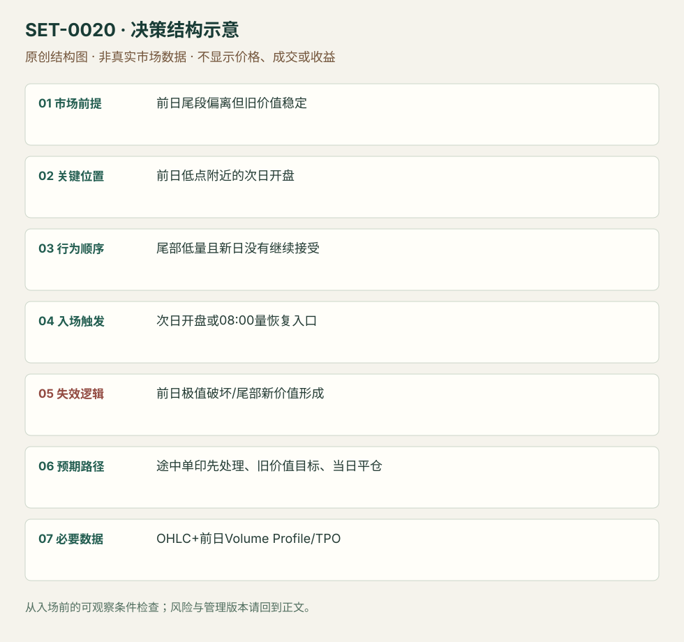

前日低量尾部的次日回价值区
Caught in the Hole · SET-0020 · reviewed · v1.0.0
盈利证据：not_established。审查范围与来源版本见第13节；未知字段保留缺失原因。
1. 名称与快速概览
前日尾段价格走远，但主要价值区没有跟随；次日近尾段极值开盘时，寻找弱持仓退出而返回旧价值的机会。源例是 EUR/USD 期货向下尾段后的多头，并非见到缺口就回补。
记录口径：PA supporting；必要数据 OHLC、session_volume_profile、TPO。名称性质：来源术语或研究术语。reviewed 只表示本条规则与证据记录审查通过，盈利状态为 not_established。
2. 本质与行为假说
行为假说是尾段卖出者需要新的持续卖盘维持低价，若没有，新日回到旧价值会迫使其买回。成交量分布能支持“尾部参与少”，不能识别每个交易者实际持仓。核心参考在前日已经形成，允许直接从次日开盘进入。
3. 适用市场与环境
适合旧价值稳定、收盘偏离大且偏离区量少，下一日仍近旧极值的情境。若价值本身已下移，或新日继续在尾部积累大量成交，则假说变弱。
来源实用市场：EUR/USD期货。
Session：来源以前日/次日自定义期货 profile；图中23:00开盘和08:00 BST活动点。数据商重置时区未核实；本库只计同一新 session 内进出，结束前平仓。
跨市场：本版不主张已经验证的跨市场迁移；更换市场必须重定数据来源、流动性与session。
4. 出现前的观察清单
先固定前日完整 session、价值区边界、极值及尾部成交；用同一 session 设置比较。检查新开盘到失效极值的距离，以及至价值区途中单印或低量节点是否先阻挡。
5. 形成过程与状态转换
前日稳定价值 → 临近结束低量快速离开 → 次日近极值开盘 → 新方向延续没有出现/买入活动恢复 → 逐段返回旧价值。盘前不能用次日最终 Profile 倒推旧价值。
6. Entry trigger 与执行方式
来源主版可在开盘买入，风险是前日低点；前提是开盘确实近低点。来源替代版在英国交易者进入的 08:00 BST 观察量增加并买入。后者是确认更强但空间更小的版本，复盘必须标明所用入口。
7. Invalidation 与止损逻辑
前日低点被有效跌破构成原版失效；执行缓冲、成交滑点和是否用硬止损，来源未统一，本库要求下单前注明。若低点未破但低价开始持续被接受，应重新评估而非盲等旧价值。
8. Exit、target 与 trade management
旧价值下边界是方向目标；途中单印区先处理。源例在 1.1867–1.1870 遇阻，缺少继续买入应退出；回价值不能成为忽略实际阻力的理由。日内版在预定 session 结束前平仓。
9. 常见 variations
对称向上尾部后做空归同一条。开盘入口和 08:00 确认入口保留为版本；以 T-Note 等相关市场确认是可研究过滤器，不另计 Setup。
10. 失败方式与不交易条件
开盘已接近价值区，潜在空间过小；新基本信息支持持续重新定价；低价形成新平衡；忽略途中单印障碍；把价格跌幅大误当作尾部量少。
11. 与相近 setups 的区别
12. 图表与案例解读
已看结果图：蓝框标单印，开盘线在其下，右侧盘中反弹多次受阻；底部成交量与价格图提供顺序。作者说等待 9.5 小时，图表不等于已执行该笔交易。
- [VIS-000021] 旧价值下沿和单印区在图中已标出；价格进入单印区后没有直达旧价值，体现分段管理。；定位：How Did...结果图。旧价值下沿和单印区在图中已标出；价格进入单印区后没有直达旧价值，体现分段管理。 验证：chart_viewed。

本地原创示意（VIS-000077，非真实市场数据）：

小屏阅读可打开原尺寸示意图并缩放。

此图用于对照识别顺序与风险定义；不计入真实案例覆盖率。
视觉材料元数据与查看范围
- VIS-000021 · real_source_chart / structure_and_trigger / chart_viewed
品种：EUR/USD期货；日期：未知/不适用；周期：未知/不适用；时区：未知/不适用
日期未在图中核对；周期未在图中核对；时区未在图中核对；来源图表不是成交审计 - VIS-000077 · synthetic_structure_diagram / illustration_only / generated_not_market_evidence
品种：未知/不适用；日期：未知/不适用；周期：未知/不适用；时区：未知/不适用
无真实品种、日期或价格：这是结构示意
13. 证据、分歧与未知项
两项解释来自 Axia 家族，独立佐证有限。文章给出单例的假设收益和持仓时长，不是可重复成交审计。先固定价值区口径，才能验证该假说。
- [EVD-000036] Richard Bailey，《Market Profile Caught In The Hole Trade》，SRC-0038；定位：What Is The Trading Strategy? / How Did...Play Out?。支持：前日价格远离稳定价值而尾段量少；次日近极值开盘可逆向，前日低点失效，单印区障碍决定减仓。
- [EVD-000037] Axia Futures / Isaac，《Open Drive Trading Strategies》，SRC-0006；定位：Strategy 1: ES overnight weak positioning。支持：同作者团队把开盘前远离价值、弱隔夜持仓的反向交易称为 caught in a hole；解释相关情境，不是独立验证。
审查边界：来源份数与独立核心核验分开；当前类别为 limited_single_family。正文中的概念、官方事实、衍生解说或同族资料只按其支持范围使用。
14. 可用于复盘的检查表
- ☐ 下单前的前提可核对：前日尾段偏离但旧价值稳定
- ☐ 事前标记位置：前日低点附近的次日开盘
- ☐ 行为按顺序出现：尾部低量且新日没有继续接受
- ☐ 实际触发符合选定版本：次日开盘或08:00量恢复入口
- ☐ 事先写明本次否定条件：前日极值破坏/尾部新价值形成
- ☐ 目标/路径只用当时已知信息：途中单印先处理、旧价值目标、当日平仓
- ☐ 数据满足 OHLC+前日Volume Profile/TPO；记录时间、点差、滑点、队列和未成交
- ☐ 记录截止平仓及规则偏离；正常亏损不事后改成“未成立”
15. 后续验证问题
尾段偏离与成交稀疏怎样量化？开盘直入和等量恢复的收益/滑点差别多大？大消息日是否失效？
双向相关导航
- SET-0038 当前低量伸展的失败反转回价值 本条使用已结束前日和次日开盘；0038 在当前 session 的伸展末端等失败触发。
- SET-0050 隔夜方向失败后反穿现金开盘线 0050 以隔夜极值失败和当日现金开盘线反穿触发，不要求旧价值分布。
- SET-0037 旧价值区重新接受后的横穿 0020 次日近低量尾部极值可直接开盘入，目标入口价值边；本条等重新进入价值并接受后到另一边。